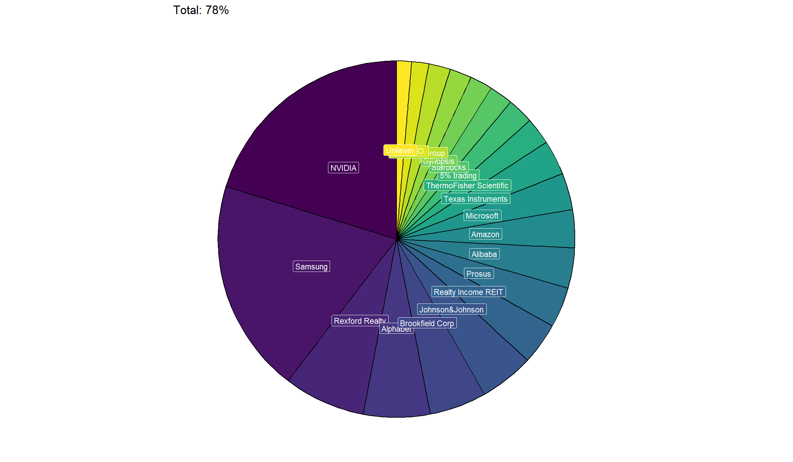
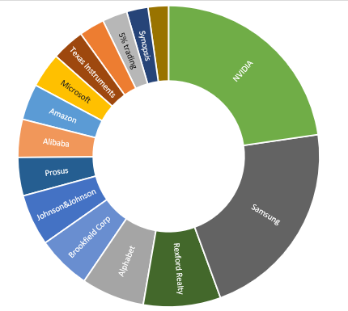

My personal portfolio
The visualization of the KarambolageNedInvest portfolio
The KarambolageNed portfolio
Introduction
This portfolio consist of a maximum of 100 values whereas the top 15 stock should compromise at least 70% of the total value.
Long-term goal:
- the long-term goal is simply: creating 50k cashflow in dividends with a dividend yield of maximum 2.5%. The portfolios value will at least 2 million then.
- retiring with 55 and just live. Kids should be old enough by then and the cash flow should support enough
Strategy updates:
April 2026:
- more investments, regular buy of undervalued opportunities
June 2026:
- sell of Alibaba for now (I am trying to buy in 2026 for 80 Euros again)
- sell of Prosus
March 2025:
in early 2025, I had to raise for a 19k kitchen. Thankfully I sold some stocks before the small crash caused by president Trump and his tariff negotiations.
in this sell-off, I saw some German stocks and defensive stocks rising such as BASF, Hochtief. I sold those even though I made a 2k loss on BASF (even though a positive return with dividends).
I also decided to sell stocks whose dividends where taxed too highly such as Swiss stocks and French stocks (Sika, Vinci, Airport Zürich). I came to this realization too late, but those 35% source tax are not beneficial for a long-term holding.
Due to uncertainty, I am a believer that big tech stocks are doing still very well. I own 4 big tech stocks now: Alphabet, Amazon, Microsoft and Nvidia.
